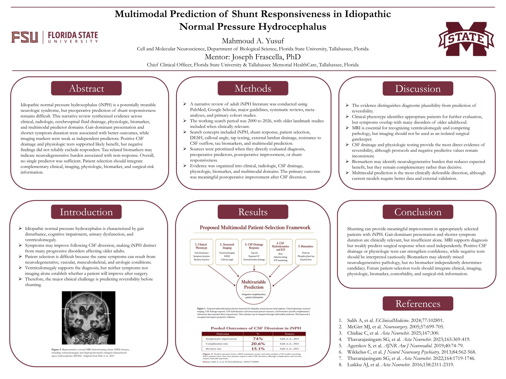

Multimodal Prediction of Shunt Responsiveness
in Idiopathic Normal Pressure Hydrocephalus
Narrative Review · Florida State University · 2026
Multimodal Prediction of Shunt Responsiveness in Idiopathic Normal Pressure Hydrocephalus
Developed a narrative review examining multimodal predictors of shunt responsiveness in idiopathic normal pressure hydrocephalus, including clinical, radiologic, CSF, physiologic, biomarker, and age-related factors.
Selected for poster presentation at Mississippi State University's Summer Undergraduate Research Showcase and oral presentation at UC San Diego's Summer Research Conference on August 12-13, 2026. Manuscript draft completed.

Research Poster Presented at Mississippi State University's Summer Undergraduate Research Showcase on July 30, 2026. View poster ↗